Rasan · the first half of RasanAI
Rasan
Mascot, and the face of the Director. Runs the set, greets you, and hands you each of the five calls.
Rasan · three scripts are ready: pick one
RasanAI Studio for Mac
A sentence and your footage go in. A finished film comes out. In between, RasanAI asks for your taste at five moments that matter.
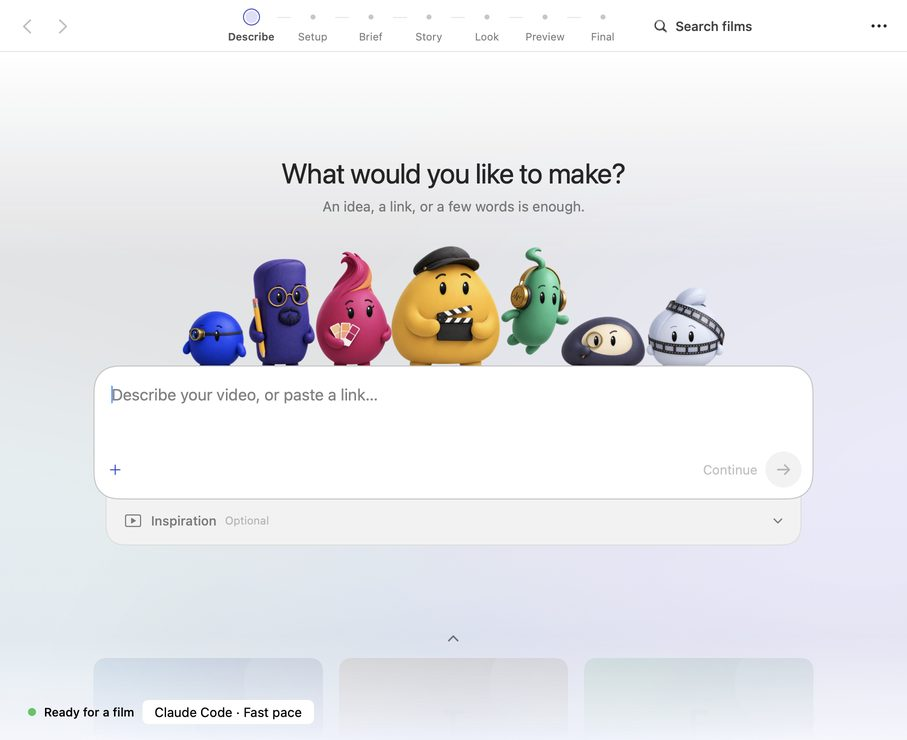
Screens from the app, with sample projects.

Five calls
RasanAI decides the craft: scenes, pacing, motion, transitions, music and sound. You decide what makes the film yours, and see it at every step.
Rasan runs the set and hands you each call. Each call is brought by the crew member who did the work.

Tara Scout
Confirm the sentence. One line you can edit, and what RasanAI understood from it. Tara scouts your product and brings it back for you to check.
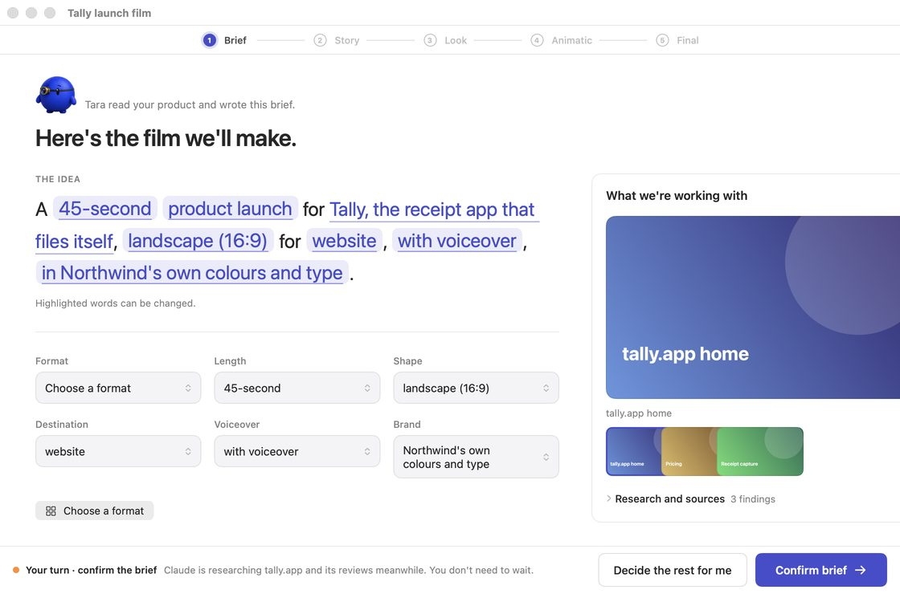

Kavi Writer
Pick one of three. Three scripts, written from your product’s truth. Choose, or ask for another take.
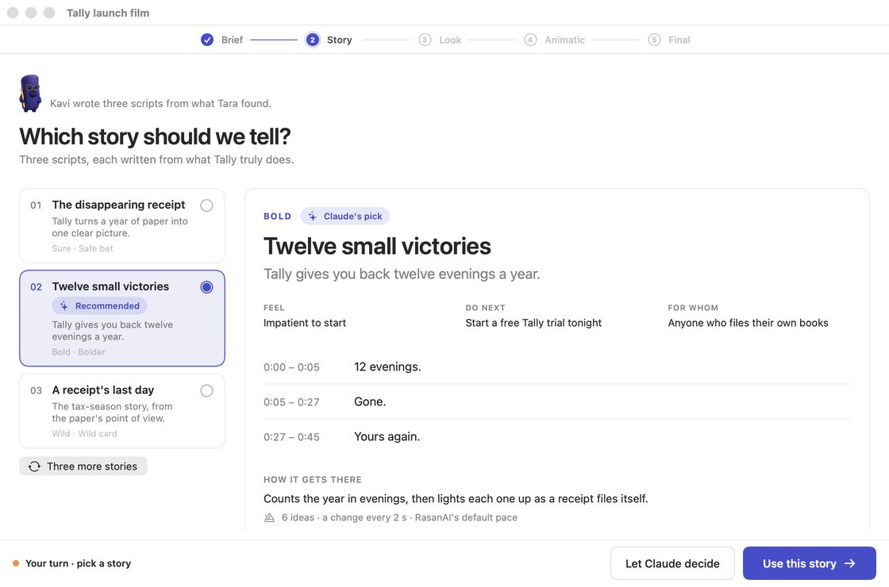

Chitra Art Director
Pick one of three. Three design systems made for that story, each drawn live on its first line.
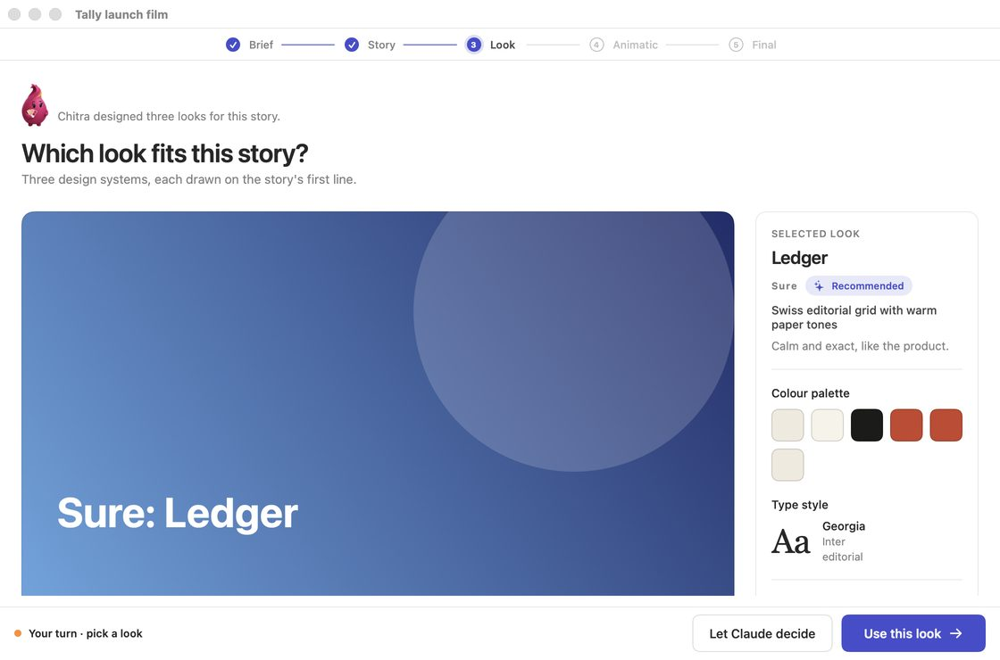

Laya Motion Director
Watch the rhythm. The whole film, rough, with music. Pin a note to any moment.
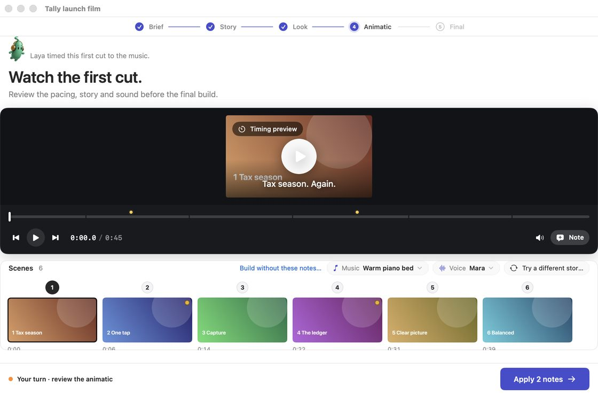

Rasika Critic
Review. Export. The finished film, with your notes and every version kept. Rasika checks it first and sends back what is off.
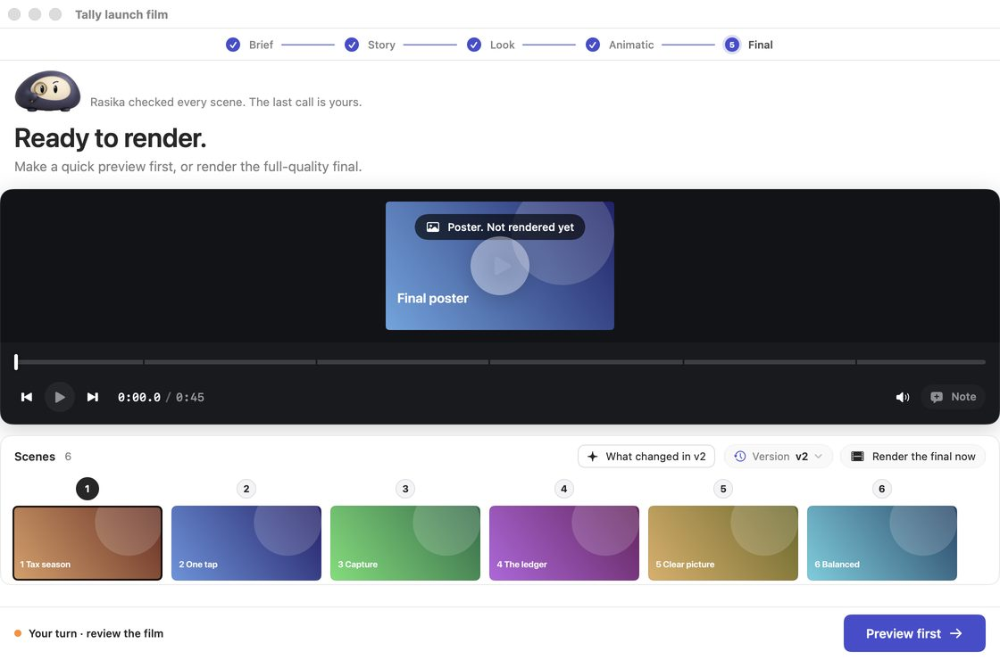

The review rooms inside each film. Footage reels bring Mala: when you point RasanAI at a folder of clips, Mala, the Editor, logs them and picks the selects before the rest of the crew starts. See footage reels ↓
While you’re away
Studio tells you when a call is yours. You do not have to watch it work: close the window, make tea, and come back when the next call is waiting.
Notifications are in the app, and as Mac notifications when Studio is in the background.
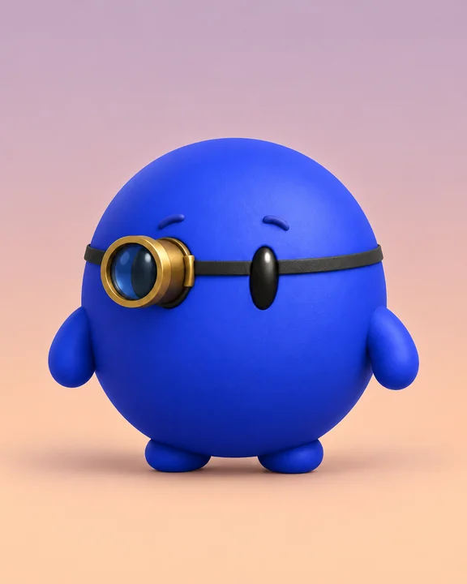
RasanAI Studionow
Tara wrote your brief
Check what she understood from your sentence.
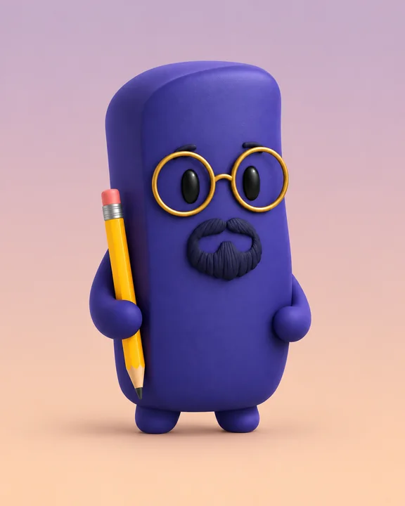
RasanAI Studionow
Kavi has three scripts for you
Pick the story you want to tell.
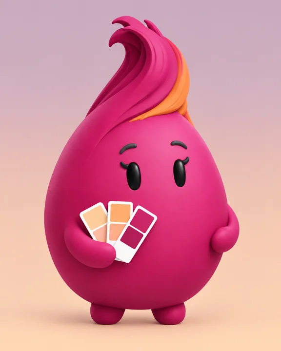
RasanAI Studionow
Chitra has three looks ready
Each one is drawn for your story.
RasanAI Studionow
Laya’s first cut is ready
Watch the rhythm and leave notes.
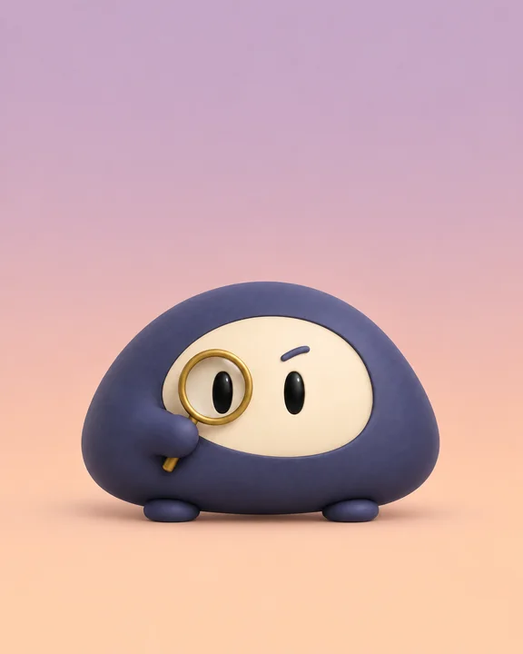
RasanAI Studionow
Rasika checked the film. It’s ready for your review
Call 5 of 5 is yours.
New film
One prompt box. Say what the film is about, and add whatever you have: footage, images, a brief, a brand guide.
Northwind launch film
Brands
A brand is a folder with a DESIGN.md: colours, type, logo. Pick one, and every film is drawn in it.
It is plain text, so you can edit it anywhere, keep it in version control, and hand it to a teammate.
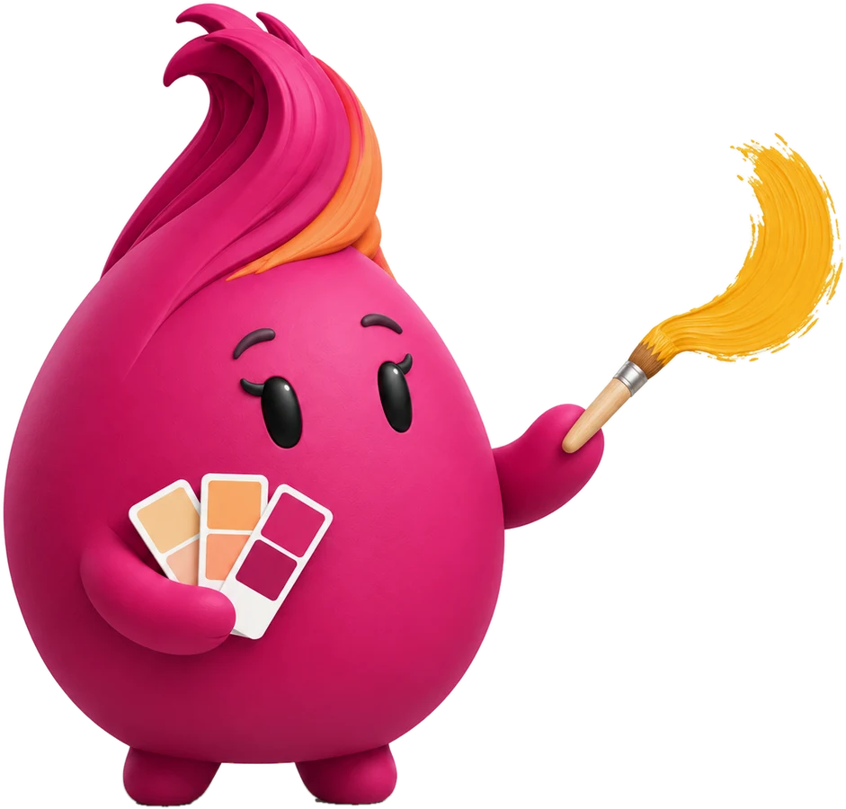
DESIGN.md
name: Northwind colors: ink: "#14213D" sea: "#1F7A8C" sand: "#F4E9CD" coral: "#EE6C4D" type: Fraunces / Inter motion: unhurried, eased, never bouncy
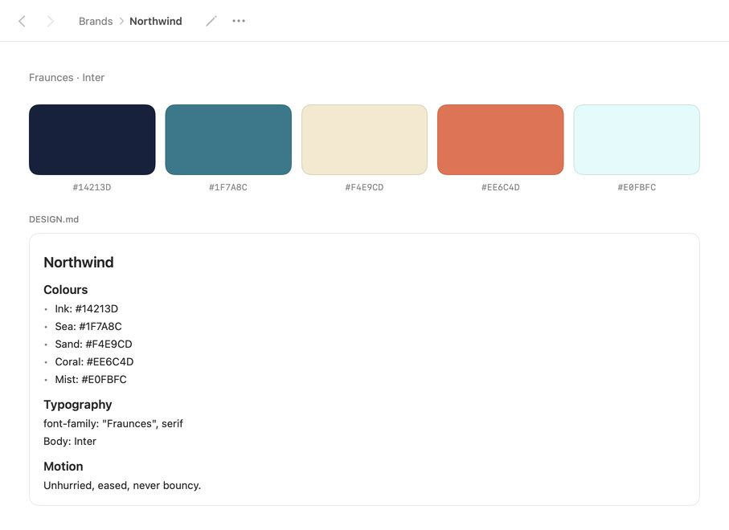
Footage folder
Mala · logged 38 clips, 9 selects
Meet the crew
Tara → Kavi14 real screens
Kavi → Chitrathe Bold script
Chitra → Layathe Ledger look
Laya → Rasikadraft 3
Rasika → youready for review
RasanAI runs a crew of agents. Each character stands for a group of them, so you can see who is working and what they just did. Their status lines come from what the agents actually report.
Rasan · the first half of RasanAI
Mascot, and the face of the Director. Runs the set, greets you, and hands you each of the five calls.
Rasan · three scripts are ready: pick one
Tara · star, the guide star
Scout. Researches your product and brings you call 1, confirm the brief.
Tara · found 14 product screens
Kavi · poet
Writer. Drafts the scripts and brings you call 2, pick a script.
Kavi · drafting script 2 of 3
Chitra · picture
Art Director. Designs the looks and brings you call 3, pick a look.
Chitra · blending three looks
Laya · tempo, rhythm
Motion Director. Times the moves and brings you call 4, notes on the animatic.
Laya · timing the moves to the music
Rasika · a connoisseur
Critic. Judges the finished film and brings you call 5, review the final.
Rasika · sent scene 4 back: the title overlaps the logo
Mala · garland
Editor. Only for footage reels: logs your clips and picks the selects.
Mala · logged 38 clips, 9 selects
Footage reels
Point it at a folder of clips. RasanAI cuts them into a reel and works motion into every part of it.
Presenter films
Film yourself talking in front of a green or blue screen. RasanAI keys you out, cuts your speech into beats and builds a world behind you for each one, with motion graphics that land on the right word. The pictures are made through Codex on your own ChatGPT plan, about a minute and a half each, and without Codex Claude draws the backdrops instead. It is new: checked on synthetic footage, not yet recorded on a real shoot, and the clip plays whole for now. Your answers to a few taste questions (plain, literal pictures or bold ones; a speaker who stays put; how much writing; captions; a badge to keep; an end card) are enforced by the checks, not guessed.
What it makes
Launch films, explainers, product and PR videos, brand films, music videos, reels and motion graphics. Real 3D where it helps.
A product launch from a sentence or a link, in your brand’s own colours and type.
A topic or a script, turned into a film that explains it.
Your product’s real screens and story, cut to the length you choose.
Your brand kept as a DESIGN.md, so every film looks like you.
Motion timed to the track, with the animatic to check the rhythm first.
Point it at a folder of clips. Mala logs them and picks the selects.
You on a green screen, in a world made for the words.
Short animated titles, cards and callouts, turned up as far as you like.
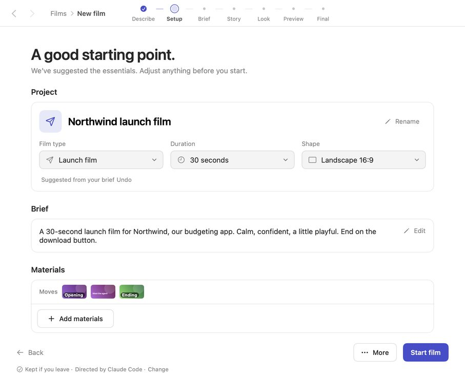
Screens from the app, with sample projects.
Explore the style library →Finished
Play the film right in the app, then export it. If something is off, say so and RasanAI makes the change.


This beta is ad-hoc signed and not yet notarized by Apple, so macOS will ask you to confirm.
After that, signed updates arrive on their own, checked every hour.
A community beta, honestly. The app is new and the real-agent generation flow is still in beta and not fully verified. Expect rough edges, and please tell us about them.
Prefer the terminal?
The same director, without the app. Add it to your agent, then ask for a film.
Install options and setup →npx skills add Sibhimanyu/rasanai --skill rasanaiThen, in your agent
/rasanai make a 45s launch film for https://tally.app